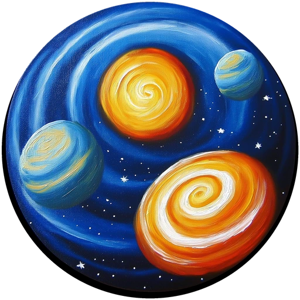

Motion DNA
Define personalidad, ritmo, intensidad, profundidad, easing y límites del sistema.

Motion 404Motion Design System · v2.0.2Universo 404 · local-first · sin cuentas
Convierte una idea web en un lenguaje de movimiento coherente: Motion DNA, especificación técnica, timeline de interacción y QA predictivo de rendimiento y accesibilidad.
Preset Library
Cada preset combina sector, stack, dirección visual, patrón de movimiento, intensidad y profundidad. Úsalo como semilla y modifícalo en el estudio.
Prueba con menos filtros.
Motion Studio
Define intención, intensidad, ritmo y profundidad. Motion 404 traduce esas decisiones a reglas verificables para diseño y frontend.
System Output
Local Systems
Se almacenan únicamente en este navegador. Puedes exportarlos o importarlos como JSON.
Design Contract
Define personalidad, ritmo, intensidad, profundidad, easing y límites del sistema.
Convierte intención creativa en tokens, reglas por componente y contrato técnico.
Ordena entradas, scroll, feedback y transiciones para que la narrativa tenga ritmo.
Detecta sobreanimación, coste de GPU/CPU, riesgo cognitivo y requisitos de reduced motion.